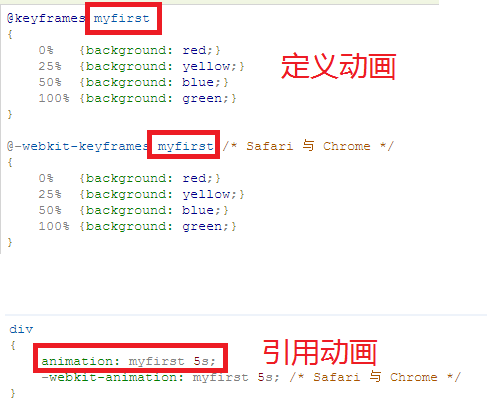

html5新增标签
header,article,aside,audio,blackquote,canvas,figure,figcaption,footer,hgroup, menu,meter,nav,progress,section,video,addressbox-shadow：设置阴影
参数：box-shadow:5px 5px 5px rgba(0,0,0,.6);
none：无阴影
参数一：第1个长度值用来设置对象的阴影水平偏移值。可以为负值
参数二：第2个长度值用来设置对象的阴影垂直偏移值。可以为负值
参数三：如果提供了第3个长度值则用来设置对象的阴影模糊值。不允许负值
参数四：如果提供了第4个长度值则用来设置对象的阴影外延值。可以为负值
参数五：（color）：设置对象的阴影的颜色。
- 外阴影常规效果
box-shadow:5px 5px rgba(0,0,0,.6); - 外阴影模糊效果
box-shadow:5px 5px 5px rgba(0,0,0,.6); - 外阴影模糊外延效果
box-shadow:5px 5px 5px 10px rgba(0,0,0,.6); - 内阴影效果
box-shadow:2px 2px 5px 1px rgba(0,0,0,.6) inset; - 外阴影模糊效果
box-shadow:5px 5px 5px rgba(0,0,0,.6);
text-shadow：文本阴影
参数：text-shadow:1px 1px 0px rgba(255,255,255,1)
none：无阴影
参数一：第1个长度值用来设置对象的阴影水平偏移值。可以为负值
参数二：第2个长度值用来设置对象的阴影垂直偏移值。可以为负值
参数三：如果提供了第3个长度值则用来设置对象的阴影模糊值。不允许负值
参数四：（color）：设置对象的阴影的颜色。
-
普通文字阴影
测试普通文字阴影效果
-
模糊文字阴影效果
测试模糊文字阴影效果
-
多重模糊文字阴影效果
测试多重模糊文字阴影效果
animation动画
animation动画参考animation:myFirstAnimation 3s ease 5s infinite
参数myFirstAnimation动画的名称
参数3s：规定动画完成一个周期所花费的秒或毫秒
参数ease：规定动画的速度曲线，默认是ease
linear:匀速ease:动画以低速开始，然后加快，在结束前变慢。
ease-in：动画以低速开始
ease-out:动画以低速结束
ease-in-out:动画以低速开始和结束
参数5s：规定动画何时开始，默认是0，单位秒或是毫秒
参数infinite：规定动画播放的次数，默认是1次，参数infinite表示无限循环播放

Juqery动画
transition过渡效果
transition是元素从一种样式逐渐改变为另一种的效果：添加效果的CSS属性和效果的持续时间 必选项
语法：transition: property duration timing-function delay;(例如：transition: all 1s ease-in-out;)
property：规定设置过渡效果的 CSS 属性的名称。
duration：规定完成过渡效果需要多少秒或毫秒
timing-function：规定速度效果的速度曲线。
linear:规定以相同速度开始至结束的过渡效果（等于 cubic-bezier(0,0,1,1)）。ease:规定慢速开始，然后变快，然后慢速结束的过渡效果（cubic-bezier(0.25,0.1,0.25,1)）。
ease-in:规定以慢速开始的过渡效果（等于 cubic-bezier(0.42,0,1,1)）
ease-out:规定以慢速结束的过渡效果（等于 cubic-bezier(0,0,0.58,1)）
ease-in-out:规定以慢速开始和结束的过渡效果（等于 cubic-bezier(0.42,0,0.58,1)）。
cubic-bezier(n,n,n,n):在 cubic-bezier 函数中定义自己的值。可能的值是 0 至 1 之间的数值。
delay：定义过渡效果何时开始。
transform：属性向元素应用 2D 或 3D 转换。该属性允许我们对元素进行旋转、缩放、移动或倾斜。
translate--转换（位移）：通过 translate() 方法，元素从其当前位置移动，根据给定的 left（x 坐标） 和 top（y 坐标） 位置参数
translate(x,y) 定义 2D 转换。translate3d(x,y,z) 定义 3D 转换
translateX(x)：定义转换，只是用 X 轴的值
translateY(y)：定义转换，只是用 Y 轴的值
translateZ(z)：定义 3D 转换，只是用 Z 轴的值。
scale--缩放：元素的尺寸会增加或减少，根据给定的宽度（X 轴）和高度（Y 轴）参数
rotate：旋转--元素顺时针旋转给定的角度。允许负值，元素将逆时针旋转
skew(倾斜转换):通过 skew() 方法，元素翻转给定的角度，根据给定的水平线（X 轴）和垂直线（Y 轴）参数：
渐变(Gradients):渐变可以让你在两个或多个指定的颜色（至少2个颜色）之间显示平稳的过渡
线性渐变（Linear Gradients）- 向下/向上/向左/向右/对角方向
径向渐变（Radial Gradients）- 由它们的中心定义
线性渐变语法：background: linear-gradient(direction, color-stop1, color-stop2, ...);
direction:不写；默认从上打下
direction:to right；从左打右
direction:to bottom right；从左上角开始（到右下角）的线性渐变(对角)
经向渐变语法：background: linear-gradient(angle, color-stop1, color-stop2);
角度是指水平线和渐变线之间的角度，逆时针方向计算。换句话说，0deg 将创建一个从下到上的渐变，90deg 将创建一个从左到右的渐变。
box-reflect：设置倒影(浏览器支持不友好)
参数：direction
above： 指定倒影在对象的上边
below： 指定倒影在对象的下边
left： 指定倒影在对象的左边
right： 指定倒影在对象的右边
参数：offset
length：用长度值来定义倒影与对象之间的间隔。可以为负值
percentage：用百分比来定义倒影与对象之间的间隔。可以为负值
参数：mask-box-image
none：无遮罩图像
url：使用绝对或相对地址指定遮罩图像。
linear-gradient：使用线性渐变创建遮罩图像。
radial-gradient：使用径向(放射性)渐变创建遮罩图像。
repeating-linear-gradient：使用重复的线性渐变创建背遮罩像。
repeating-radial-gradient：使用重复的径向(放射性)渐变创建遮罩图像。